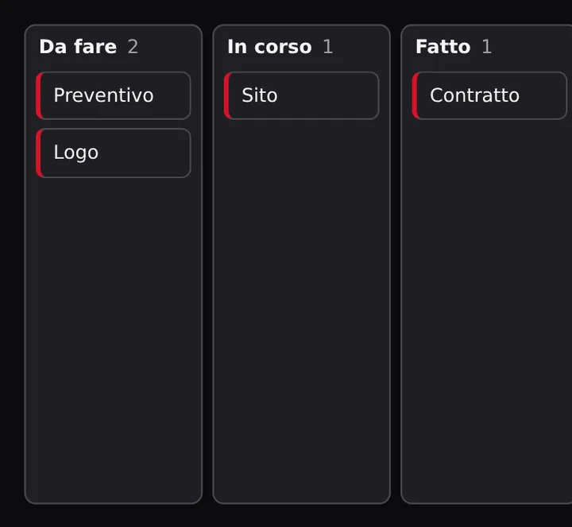
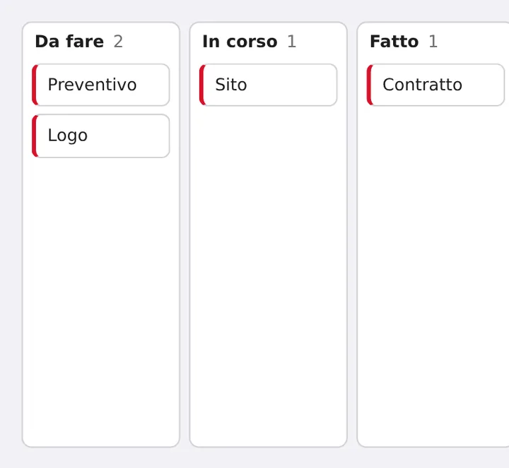

Controllo · scheda Produttività
Kanban
Colonne con schede da trascinare


Esempio
Metti un Kanban nella finestra (si chiamerà Kanban1) e scrivi:
quando Finestra1.apertura fai Kanban1.ombra = verofine quando Kanban1.spostamento_scheda fai stampa("spostamento_scheda: scheda = {evento["scheda"]}")fineRisultato (controlli simulati)
spostamento_scheda: scheda = esempio Kanban1.ombra = vero
Proprietà
Si leggono e si cambiano con il punto: Kanban1.colonne. Ha anche le proprietà comuni a tutti i controlli (posizione, colori, carattere, bordo, effetti).
| Proprietà | Tipo | Iniziale | Significato |
|---|---|---|---|
colonne | lista | ["Da fare", "In corso", "Fatto"] | Titoli delle colonne |
schede | dizionario | {} | Schede per colonna: colonna -> lista di testi |
stile | scelta tra `"normale"`, `"moderno"`, `"pillola"`, `"3d"`, `"neon"`, `"vetro"`, `"cartone"`, `"pixel"`, `"carta"`, `"minimale"`, `"gioco"`, `"elegante"`, `"tecnico"` | "normale" | Stile dell'oggetto: la forma (angoli, bordi, ombre, carattere, reazione al tocco); il colore resta quello scelto. "normale" = come la finestra |
dinamiche | lista | [] | Comportamenti da gioco senza codice: giocatore, gravità e salto, piattaforma, raccoglibile, nemico, spara, rimbalza, trascinabile... (se ne possono mettere più di una) |
Eventi
quando Kanban1.spostamento_scheda faiprincipaleQuando una scheda viene spostata. Inevento:scheda,da,a.quando Kanban1.clic faiQuando si fa clic sul controllo. Inevento:x,y.
Metodi
Kanban1.aggiungi_scheda(colonna, testo)Aggiunge una scheda con il testo in fondo alla colonna.Kanban1.rimuovi_scheda(colonna, testo)Toglie la prima scheda con quel testo dalla colonna.Kanban1.salta([forza])Fa saltare l'oggetto:Palla.salta()oPalla.salta 15(forza da 1 a 30: 10 è il salto normale).Kanban1.spingi([velocita_x], [velocita_y])Dà una spinta:Palla.spingi(300, -200)(pixel al secondo; y negativo = in su).Kanban1.ferma_movimento()Ferma il movimento dell'oggetto (le dinamiche restano).Kanban1.spara()Spara un colpo adesso (serve la dinamica "spara", altrimenti una pallina in avanti).Kanban1.esulta([secondi])Il personaggio esulta per un po' (salti di gioia).Kanban1.aggiungi_dinamica(nome, [regolazioni])Aggiunge una dinamica:Palla.aggiungi_dinamica("rimbalza", {"velocità_x": 300}).Kanban1.togli_dinamica(nome)Toglie una dinamica:Nemico1.togli_dinamica("nemico").Kanban1.ha_dinamica(nome)Vero se l'oggetto ha la dinamica:se Palla.ha_dinamica("gravità") allora.Kanban1.regola(nome, regolazione, valore)Cambia una regolazione:Giocatore.regola("giocatore", "velocità", 400).Kanban1.tocca(altro)Vero se i due oggetti si toccano adesso:se Giocatore.tocca(Lava) allora.
E tutte le animazioni comuni: Kanban1.lampeggia(), Kanban1.rimbalza(), Kanban1.vola_a(x, y)…
Stili pronti
Con Kanban1.stile = "principale" prende colori, bordo e reazione al mouse coerenti con il tema della finestra.
- normale
- moderno
- pillola
- 3d
- neon
- vetro
- cartone
- pixel
- carta
- minimale
- gioco
- elegante
- tecnico
Dove funziona
- PCsì
- Telefonosì